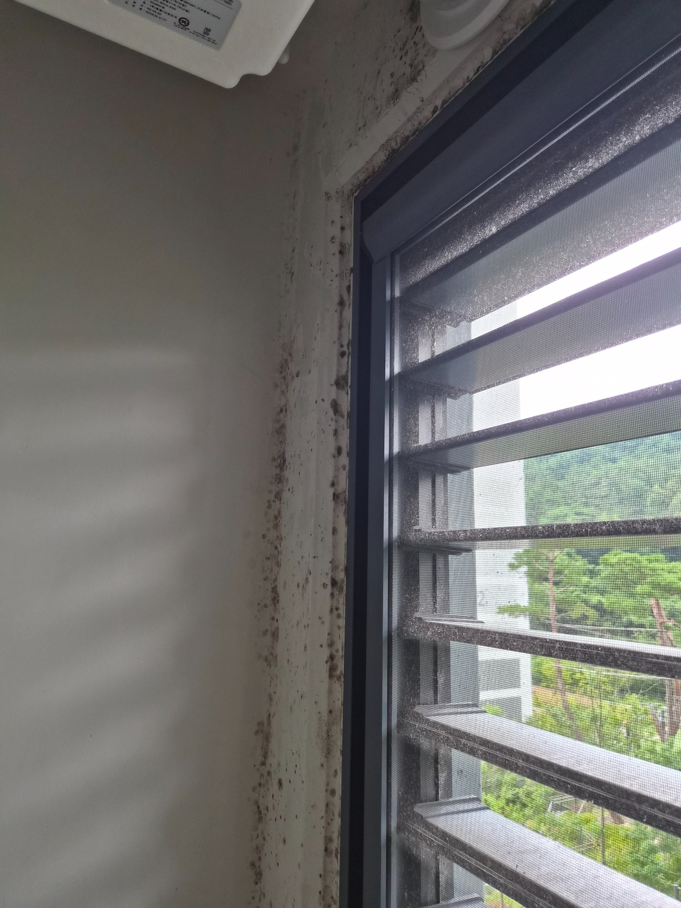
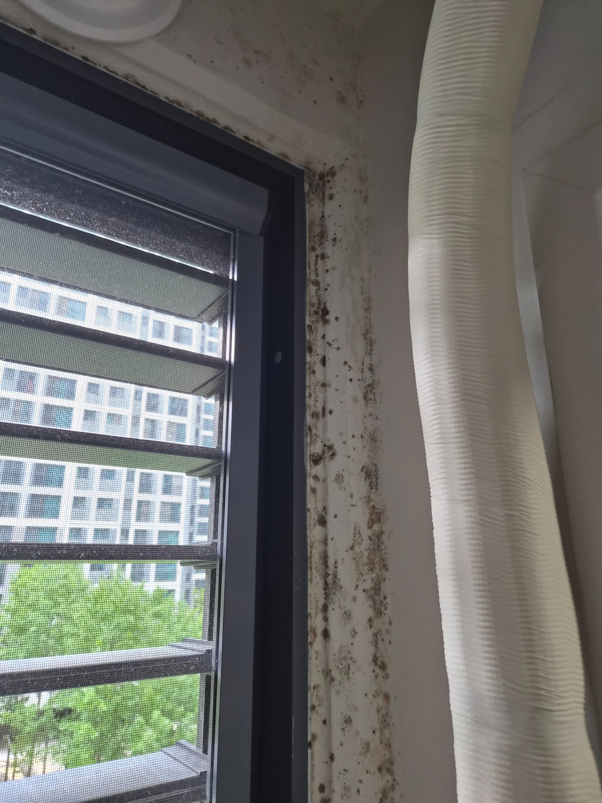
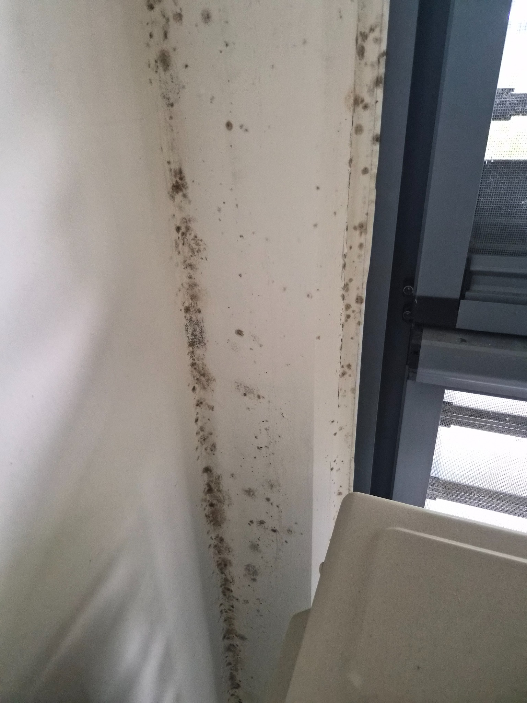
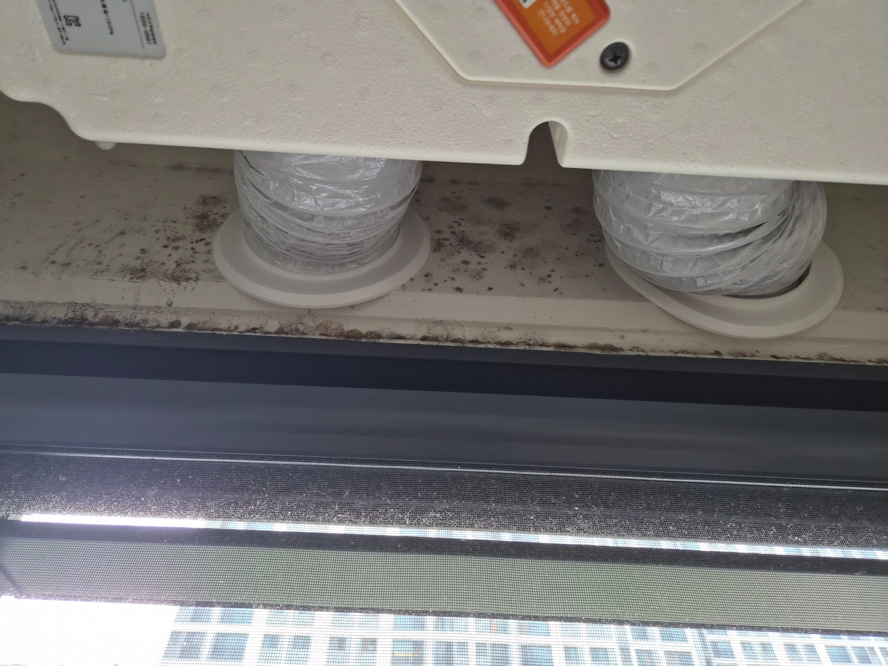
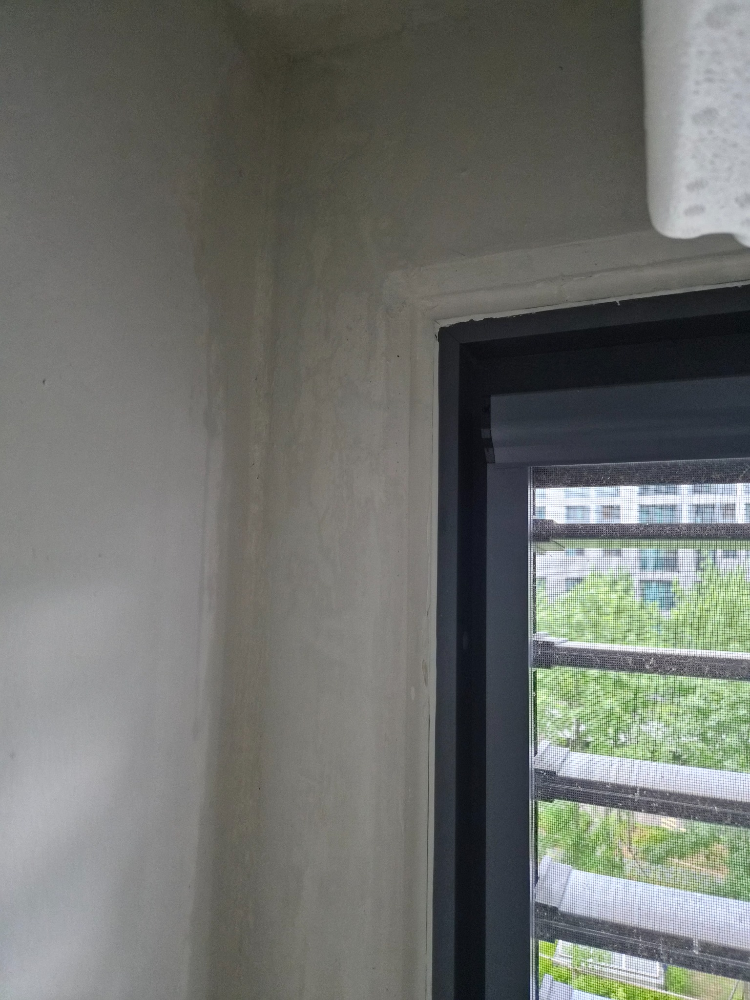
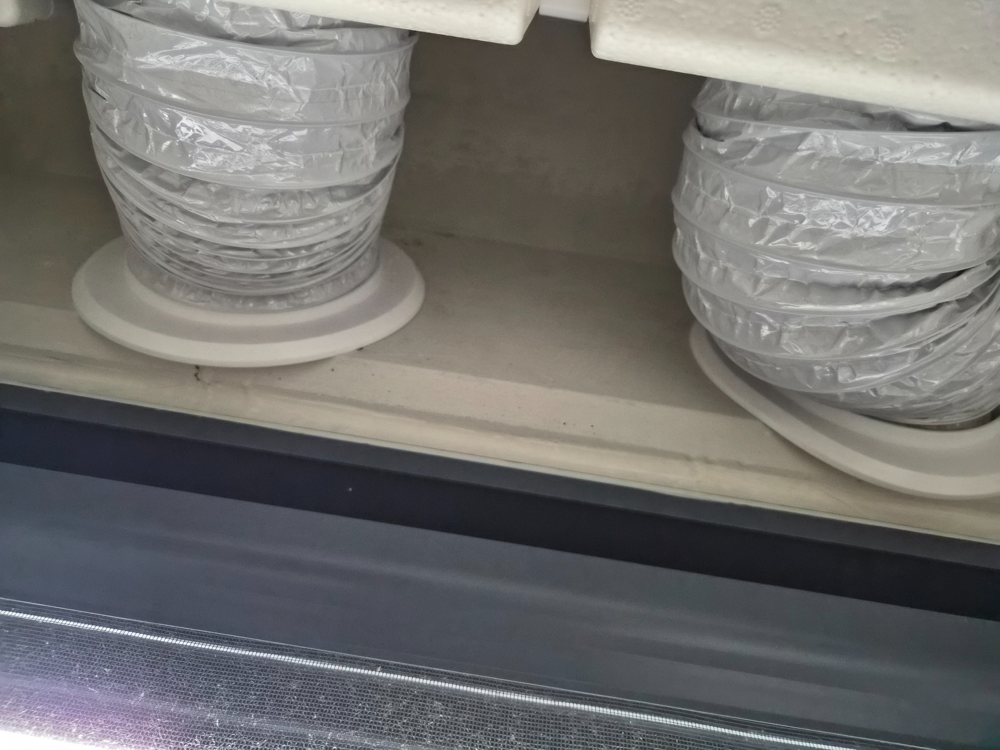
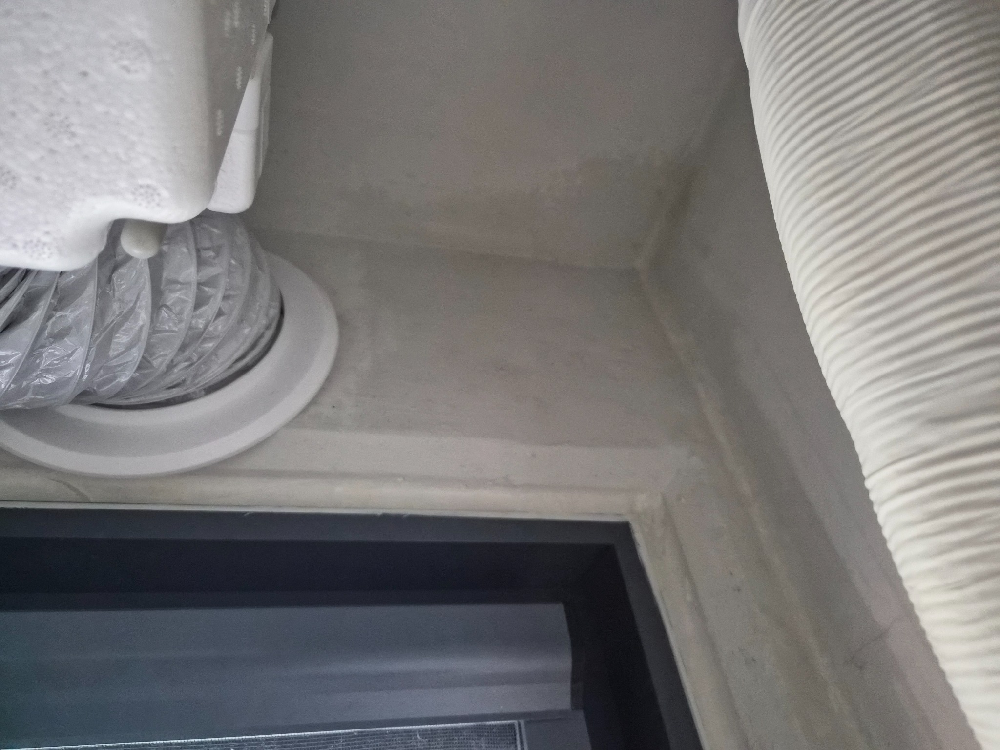
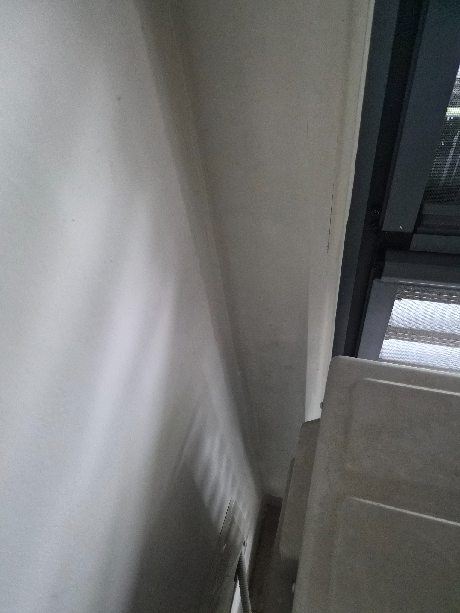

창가·배관 주변 곰팡이 제거 작업사례
창문 모서리와 에어컨 배관 주변처럼 습기가 머물기 쉬운 공간에 번진 곰팡이를 정리한 현장입니다. 보이는 부분만 닦는 방식이 아니라 오염 범위를 확인하고 벽면과 창틀 주변을 함께 관리했습니다.
곰팡이 청소는 원인 확인이 중요합니다
창가 곰팡이는 결로, 높은 습도, 환기 부족 등 여러 원인이 함께 작용할 수 있습니다. 청소로 표면 오염을 줄일 수 있지만, 반복되는 결로와 누수 같은 원인이 남아 있으면 다시 발생할 수 있으므로 작업 후 습도와 환기 관리가 중요합니다.
청소 전 상태
창문 주변과 배기·배관이 지나가는 좁은 틈은 습기가 머물기 쉬워 벽면과 몰딩, 상부 선반에 곰팡이가 넓게 번질 수 있습니다. 이번 사진에서도 검은 반점이 단순 먼지 수준을 넘어 여러 면에 반복적으로 나타난 상태가 확인됩니다.

창가 모서리에 번진 곰팡이
창틀과 벽이 만나는 모서리를 따라 검은 곰팡이 반점이 길게 퍼져 있었습니다. 이런 부분은 시야에서 잘 가려져 오염이 누적되기 쉽고, 단순 물걸레만으로는 흔적이 반복적으로 남는 경우가 많습니다. 주변 벽면 손상 여부와 습기 흔적을 함께 확인한 뒤 청소 범위를 잡았습니다.

벽면 전체로 이어진 점상 곰팡이
창문 옆 수직 벽면에는 작은 점상 오염부터 덩어리 형태의 곰팡이까지 함께 보였습니다. 표면 한 부분만 닦기보다 창틀 가장자리와 벽면 전체를 연결해서 살펴야 재오염 부위를 놓치지 않습니다. 특히 검은 반점이 끊겨 보이더라도 습기가 머문 자리는 넓게 확인하는 것이 중요합니다.

배관 하부와 창틀 상단 오염
에어컨 배관이 지나가는 상부 공간에도 검은 오염이 쌓여 있었습니다. 배관과 창틀 사이처럼 손이 잘 닿지 않는 부분은 먼지와 습기가 함께 남아 곰팡이 오염이 발생하기 쉽습니다. 눈에 보이는 면뿐 아니라 상단 턱과 연결부까지 작업 범위에 포함했습니다.

창틀 상단의 곰팡이 누적
창틀 위쪽과 배기호스 주변에도 검은 점이 이어져 있었습니다. 높은 위치라 평소 관리가 어렵고, 결로가 생기면 수분이 아래쪽으로 흘러 벽면 오염을 넓힐 수 있습니다. 작업 전 이런 흐름을 확인해 상단부터 하단까지 순서대로 정리했습니다.
곰팡이 제거 후
표면에 붙어 있던 검은 곰팡이와 주변 오염을 정리한 뒤 벽면, 창틀 상단, 배관 주변을 다시 확인했습니다. 마감재의 오래된 착색이나 변색은 청소만으로 완전히 사라지지 않을 수 있지만, 제거 가능한 표면 오염은 최대한 정리해 관리가 쉬운 상태로 마무리합니다.

창가 모서리 정리 후
곰팡이가 집중되어 있던 창가 모서리를 정리한 뒤 검은 점상 오염이 크게 줄어든 상태입니다. 벽면은 과도하게 문지르면 도장면이 손상될 수 있어 마감 상태를 보면서 작업해야 합니다. 청소 후에는 남은 습기와 물기를 확인해 건조가 잘 되도록 관리하는 것이 중요합니다.

창틀 상단과 배관 주변 정리
배관 아래 상단 턱과 창틀 가장자리도 함께 정리했습니다. 좁은 틈의 먼지와 검은 흔적을 제거해 이후 상태를 확인하기 쉬운 환경으로 만들었습니다. 이런 부위는 다시 습기가 차면 오염이 생기기 쉬워 주기적으로 환기와 결로 여부를 점검하는 것이 좋습니다.

검은 곰팡이 반점 제거 후
작업 전 길게 이어졌던 검은 곰팡이 반점이 정리된 모습입니다. 벽면의 기존 색상과 마감재 상태를 최대한 유지하면서 표면 오염을 제거했습니다. 곰팡이가 자주 생기는 창가라면 청소 이후에도 환기와 습도 관리가 함께 이루어져야 관리 주기를 늘릴 수 있습니다.

전체 마감 상태 확인
마지막으로 창틀 옆 벽면과 배관 주변을 다시 확인해 남은 오염과 물기를 점검했습니다. 작업 전보다 벽면이 정돈되어 곰팡이 재발 여부도 쉽게 확인할 수 있는 상태가 되었습니다. 퍼펙트케어는 현장 상태에 따라 제거 가능한 범위와 추가 보수 필요 여부를 구분해 안내합니다.
퍼펙트케어 무료 방문견적
현장 규모, 오염 정도, 필요한 작업 범위를 직접 확인한 뒤 작업 범위와 관리 방법을 안내합니다. 양산·김해·부산 사업장 및 생활공간 청소 상담이 가능합니다.